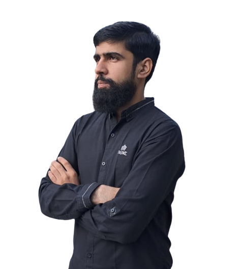

|
Abdul Wahab I am a first-year Ph.D. student in Electrical and Computer Engineering at Ontario Tech University. I am very fortunate to be advised by Prof. Akramul Azim. Previously, I earned master's degree in Computer Science from COMSATS University Islamabad and a bachelor's degree from International Islamic University Islamabad. |
 |
{kind=link}
News[05/2024] Accepted a Ph.D. offer at Ontario Tech University. Thank you to Prof. Akramul Azim for his support all along. |
ResearchI'm interested in computer vision, deep learning, generative AI, and image processing. Most of my research is about inferring the physical world (shape, motion, color, light, etc) from images, usually with radiance fields. |

|
Visual attribution using Adversarial Latent Transformations
Tehseen Zia, Abdul Wahab, David Windridge, Santosh Tirunagari, Nauman Bashir Bhatti Computers in Biology and Medicine, 2023 Paper VA2LT modifies discrepancies in the latent space to better capture relevant features for visual attribution without data biases or inefficient pixel-level solutions. |
|
Thank you to Jon Barron for the website template. |